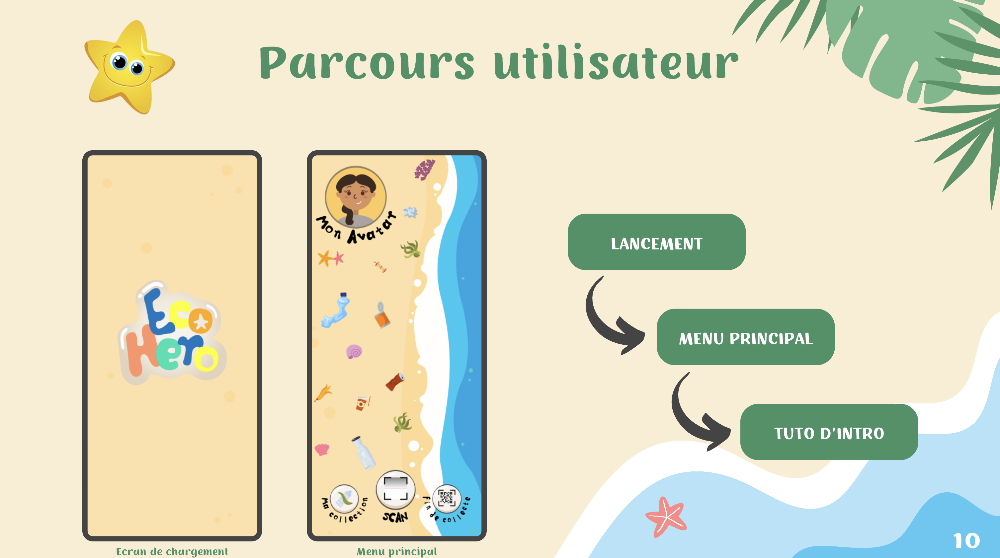
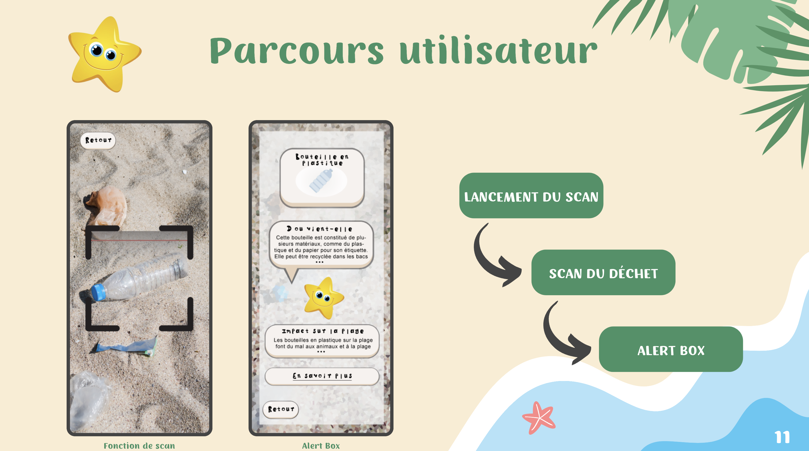

EcoHéro
EcoHéro est une application ludique pour sensibiliser les enfants de 8 à 12 ans à la pollution des plages en encourageant des actions positives par la gamification, dans le cadre d’une association dédiée à la protection de l’environnement.
 Objectifs du Projet
- Sensibiliser les enfants à la pollution des plages
- Encourager les enfants à collecter les déchets
- Promouvoir la médiation écologique
L'application propose une expérience immersive où les enfants peuvent explorer une plage virtuelle polluée, utiliser une fonctionnalité de reconnaissance d'image pour scanner et collecter des objets, et accéder à des informations détaillées sur ces objets ainsi que sur leur recyclage. En fin d'activité, les enfants sont encouragés à déposer les déchets collectés dans des bacs de recyclage et peuvent recevoir des récompenses sous forme de points échangeables contre des cadeaux réels, favorisant ainsi l'engagement continu et la participation à des événements écologiques.